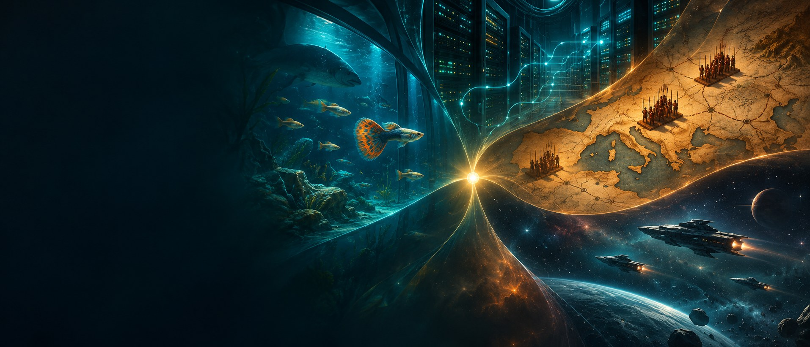
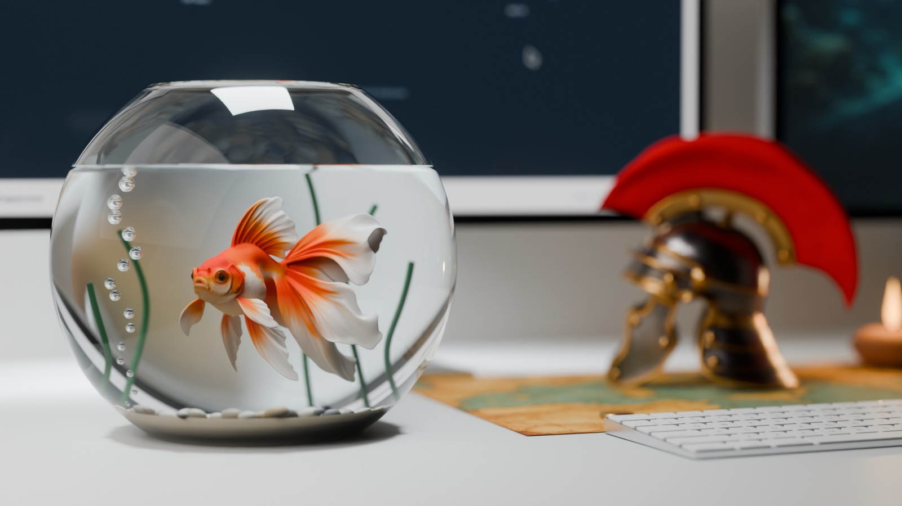
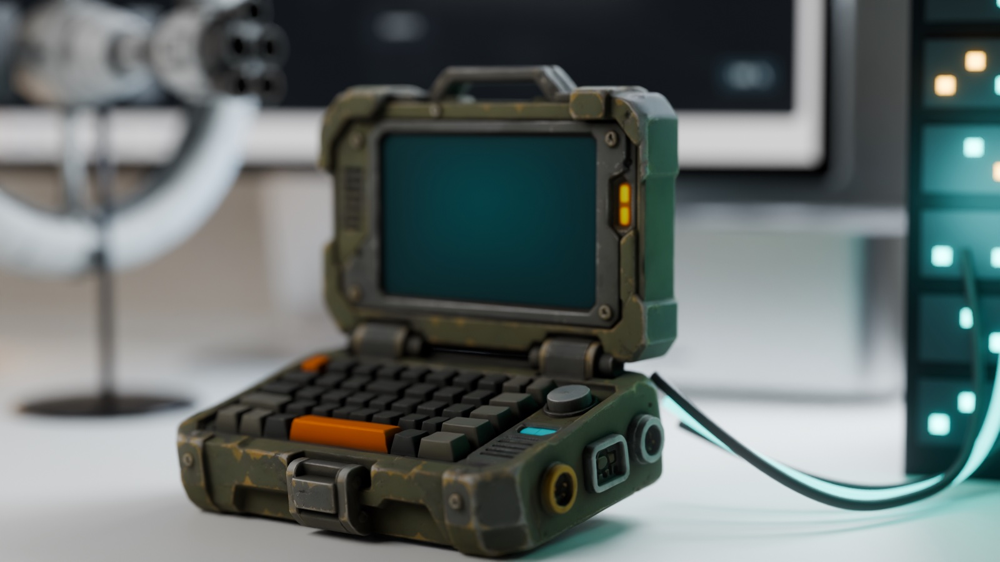
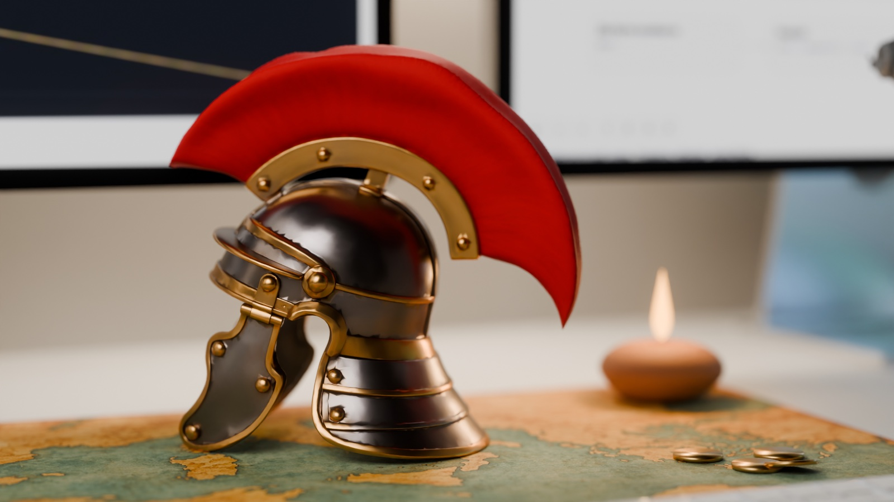
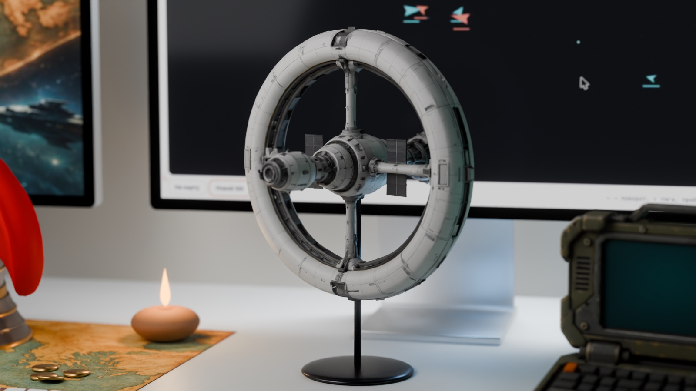
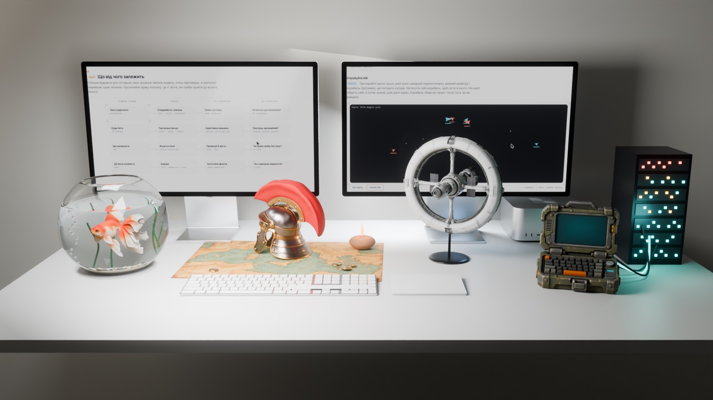

- Вже є
- Робоча арена на Unity з ботами й балансом, понад 600 комітів. Моделі чужі й тимчасові.
- Прототип
- Вже існує. Бракує тесту з живою людиною.
- Оцінка
- Тиждень до тесту, потім окремо власні моделі.
- Далі, якщо
- Друг сам просить ще один бій і пересідає між кораблями без підказки.
- Зупинити, якщо
- Після 5 боїв пересадка лишається непотрібною.
- Ризик
- Права: до будь-якого публічного показу чужі моделі треба замінити.

Дослідження · геймдизайн · чернетка
Чотири ігри
Океанаріум, оборона навпаки, Рим і флот: що гравець вирішує знову й знову і яка стара гра вже це пробувала
Одна людина з ШІ-помічником хоче зробити чотири різні гри. Код тепер пишеться швидко, тож вузьке місце змістилося: треба знайти в кожній грі рішення, до якого хочеться повертатися. Мета статті одна: вирішити, з чого почати розробку, і це рішення стоїть у розділі 07. Більшості цих ігор ще немає, тож кожен твердий факт нижче стосується старих ігор, біології чи мереж, а все про наші ігри є гіпотезою. Позначки: факт має джерело, модель рахує за підписаною формулою з навчальними числами, задум ще нічим не перевірений.
00Чотири світи за хвилину
Одна світла точка, рішення гравця, проходить через усі чотири світи. Далі кожен можна розібрати руками.
01задумРішення, до якого повертаються
Жанр мало що каже про гру. Менеджер океанаріуму й пілот можуть думати однаково часто, але про різне. Тому порівнюємо не жанри, а три властивості головного рішення: як часто його ухвалюють, коли видно наслідок і скільки коштує помилка.
Важливо. Це не виміри. Ігор ще немає, тож оцінки авторські, і перший прототип кожної гри може їх спростувати. Стара гра теж нічого не доводить про нашу: вона лише показує, що подібна ідея колись існувала.
02Вивести нову рибу

факт Цей шлях уже торували. El-Fish 1993 року створили Олексій Пажитнов, автор «Тетріса», і Володимир Похилько у студії AnimaTek: кожна риба мала власну «ікру», подібну до геному, близько 800 ознак можна було змінювати селекцією й мутаціями, а для кожної риби гра сама генерувала до 256 кадрів плавання. Megaquarium 2018 року від Twice Circled підійшла з іншого боку: це менеджмент закладу, де кожна риба має вимоги до резервуара, а снепер може вирости настільки, що з'їсть сусідів.
задум Наша гра поєднує ці половини. Є риби, яких любиш за вигляд, і заклад, який за них платить. Починаємо з кімнати з кількома акваріумами. Рибу можна виловити або вивести: вилов дає нове, але випадкове, а схрещування дає передбачуване, але повільне. Це і є рішення, що повторюється.
задумКлючові механіки
Вилов
Гравець відправляє експедицію й платить часом і грошима.
Нова риба одразу, але її ознаки випадкові.Схрещування
Гравець обирає пару, чекає приплід і лишає кращих мальків.
Ознака закріплюється передбачувано, але за кілька поколінь.Резервуар
Гравець підбирає об'єм, обладнання й сусідів.
Перевантаження знижує кисень, а несумісні види гинуть.Відвідувачі
Гравець складає експозицію, а не лише колекцію.
Рідкісне й різноманітне приносить гроші на наступний зал.Розбудова
Кімната, зал, океанічний резервуар.
Більше місця дає більші види, але й більші витрати.Керування
Миша або дотик: вибір риби, перетягування в резервуар, пауза.
Реакція не потрібна, час можна пришвидшувати.Спробуйте схрестити
факт За основу взято гупі, на яких 1922 року Ойвінд Вінге показав Y-зчеплене успадкування кольору: такий візерунок передається від батька синам. модель Тут одна ознака Y-зчеплена (колір хвоста), одна менделівська (яскраве тіло домінує над блідим), а розмір плавця просто наслідує середнє батьків із випадковим відхиленням. Реальна генетика гупі значно складніша: кольорові гени є і в X-хромосомі, і поза статевими.
Від кімнати до залу: хто за це платить
модель Риби приводять відвідувачів, квитки платять за оренду й корм, а залишок іде на більший резервуар. Заробіть на зал, а потім на океанічний. Новий резервуар одразу підвищує оренду, а порожній він нічого не приносить, тому після будівництва каса просідає. Купуйте рибу, виводьте рідкісних і міняйте ціну квитка, а потім натискайте «Наступний місяць».
Цікавий факт. Гупі живородні, ікри в прямому сенсі вони не відкладають, тому в нашій сцені відразу мальки. Найбільший резервуар Georgia Aquarium, Ocean Voyager, вміщує 6,3 млн галонів, близько 23,8 млн літрів. Це майже в тисячу разів більше за наш океанічний резервуар зі сцени.
задумЩо від чого залежить
Рибу любиш за вигляд, а заклад за неї платить. Схема показує, як ці дві половини живлять одна одну.
03Оборона навпаки

факт Перевертати Tower Defense почали не ми. Anomaly: Warzone Earth від 11 bit studios вийшла 8 квітня 2011 року: гравець веде колону крізь вежі ворога, а сам жанр у студії запропонували називати tower offense. Там атака йде вулицями. задум У нас вона йде мережею: гравець перевантажує вигадану машину, а вона на очах будує захист.
факт Тема реальна. Cloudflare у звіті за IV квартал 2025 року назвала 31,4 Тбіт/с за 35 секунд найбільшою публічно розкритою DDoS-атакою на той час і приписала її ботнету Aisuru-Kimwolf. Компанія розрізняє атаки, які забивають канал, атаки на слабкі місця протоколів і атаки на застосунок. Захист теж різний: розподіл трафіку мережею, обмеження частоти, фільтри правил.
задум Гра бере лише цю логіку: різні вузькі місця вимагають різного захисту. Наші «потік», «вузол» і «запит» є трьома вигаданими архетипами, а не технічною класифікацією. Жодних протоколів, інструментів чи параметрів у гри немає й не буде.
задумКлючові механіки
Енергія
Усі атаки беруть із одного запасу, що повільно відновлюється.
Удар всюди одразу неможливий, тож треба обирати.Три архетипи
Потік б'є по каналу, вузол по проміжній ланці, запит по сервісу.
Кожен архетип зупиняє лише свій захист.План машини
Машина оголошує, що будує, і будує із затримкою.
Гравець встигає змінити напрямок, тому хід можна передбачити.Запас машини
Кожна споруда витрачає обмежений ресурс.
Змусити машину витратитись не там теж є перемогою.Рівні
Кожна машина має інше вузьке місце.
Спершу гравець вивчає її, бо заготовлена відповідь не спрацює.Керування
Клік по типу атаки й цілі, без точності рук.
Важить вибір моменту, а не швидкість миші.Міні-бій
модель За 60 секунд доведіть доступність сервісу до нуля. Перемикач змінює лише спосіб відповіді машини. Зіграйте обидва рази: передбачувана машина оголошує, що будує і чому, а випадкова робить те саме за тими самими цінами, але навмання й мовчки.
Не плутати. Передбачувана машина не означає статичну. Вона змінюється, але за видимими правилами й із видимими запасами. Тоді програш можна пояснити, а не списати на шахрайство бота. Реальні DDoS-атаки шкодять людям і можуть бути незаконними, тому гра лишається абстрактною.
задумЩо від чого залежить
Удар, план машини й витрати пов’язані в один цикл. Праворуч два питання, на які має відповісти прототип.
04Утримати Рим

факт Centurion: Defender of Rome вийшла 1990 року: дизайнер Келлін Бек, студія Bits of Magic, видавець Electronic Arts. Гравець починає 275 року до н. е. центуріоном із одним легіоном і прагне стати цезарем. Стратегія на карті покрокова, битви йдуть у реальному часі з паузою для наказів. Гра поєднує завоювання, морські бої, ігри гладіаторів, перегони в Цирку Максимус і союз із Єгиптом. За механікою вона схожа на попередню гру Бека, Defender of the Crown.
задум Ми беремо не антураж, а будову: завоювання, казна й підтримка міста є трьома гілками, які живляться одна від одної. Цирк тут не прикраса після бою, а спосіб купити час, щоб завойоване не розвалилось.
задумКлючові механіки
Хід на карті
Гравець рухає легіони між провінціями, один хід за раз.
Куди не пішов цього ходу, туди прийде наступного, якщо вистачить ходів.Легіони
Гравець набирає й веде війська.
Втрати лишаються на карті, поки їх не поповниш.Казна
Провінції платять, а набір та ігри витрачають.
Гроші одночасно потрібні в трьох місцях.Підтримка міста
Кожна нова провінція знижує її, а ігри підвищують.
Низька підтримка означає бунт у завойованому.Дипломатія
Частину провінцій можна взяти союзом, а не боєм.
Союз береже легіони, але може зламатися.Битва й керування
Шикування й накази в реальному часі, пауза дозволена.
Спосіб бою змінює те, наскільки важить чисельність.Скільки людей вирішує
факт Перед битвою корисно знати закони Фредеріка Ланчестера. Якщо бій є низкою дуелей, сила пропорційна чисельності (лінійний закон). Якщо кожен може бити кожного, сила пропорційна квадрату чисельності. Лінійний зазвичай пов'язують із ближнім боєм, квадратичний із вогнем здалеку. Обидва дуже спрощені: місцевість, мораль і командування в них не входять, а про застосовність до реальних битв досі сперечаються. модель Спробуйте кнопку «Розбити частинами»: вона показує, чому в квадратичному бою концентрація важить більше.
Три гілки на карті
модель Найпростіший зразок кампанії: сім ходів до кінця. Бій рахується лінійним законом, числа вигадані, а карта є схемою. Спробуйте виграти лише легіонами, а потім із цирком.
задумЩо від чого залежить
Завоювання, казна й підтримка міста живляться одна від одної. Праворуч те, що має підтвердити прототип.
05Бути флотом чи кораблем

факт Того ж 1990 року вийшла Star Control від Toys for Bob, Пола Райхе III і Фреда Форда. Покрокова кампанія на зоряній карті зводила кораблі в бої реального часу, натхненні Spacewar!, а екіпаж, втрачений у бою, лишався втраченим і на карті, поки його не поповниш у колонії. Кораблі навмисно нерівні один на один: рівними задумано лише флоти загалом, тому вирішує вибір пари.
задум Наша четверта гра вже має прототип бою з інерцією, тому ця частина спирається на практику, а не лише на теорію. Гравець командує флотом у реальному часі й будь-коли сідає в будь-який корабель, поки решту веде бот. Світ буде власний, без чужих назв і моделей. Головне рішення: де ти особисто потрібен саме зараз.
задумКлючові механіки
Інерція
Тяга змінює швидкість, а не положення.
Розворот не гасить рух, тому пілотування має вагу.Пересадка
Гравець будь-коли сідає в будь-який свій корабель.
Там, де він є, стає краще, а всюди інде керує бот.Наказ
На тактичній карті гравець призначає цілі.
Наказ діє, навіть коли гравець уже в іншій кабіні.Ролі
Перехоплювач, крейсер, підтримка.
Причина пересісти виникає сама: кожній ролі потрібне інше.Без паузи
Час іде завжди, а бій флотів триває 5–8 хвилин (цільове значення).
Увага є головним ресурсом.Керування
Клавіатура або геймпад у кабіні, миша на карті.
Одна клавіша перемикає між кораблем і картою.Спробуйте бій
модель Три кораблі проти трьох, ролі різні: швидкий перехоплювач, важкий крейсер і корабель підтримки, що лагодить сусідів. Натисніть свій корабель, щоб сісти в нього. На карті оберіть свій, а потім чужий, щоб дати наказ. Корабель зберігає наказ і після того, як ви вийдете.
Насправді. Перемикання камери є найлегшою частиною. Важко передати командування: корабель, який ви покинули, має далі робити зрозуміле, а причина пересісти має бути. Тому ролі різні.
задумЩо від чого залежить
Гравець один, кораблів багато. Схема показує, що тримає бій, поки гравець деінде.
06задумРішення про старт

Рекомендація. Флот не зупиняти: довести до тесту з другом. Паралельно нічого великого не починати, а дати один обмежений тиждень прототипу оборони навпаки. Океанаріум починати лише тоді, коли схрещування витримає паперову перевірку. Рим поки не починати.
Тут мета не вибрати улюблену гру, а вирішити, куди йде наступний тиждень роботи. Тому для кожної гри є однаковий запис: що вже є, найменший прототип і заздалегідь названі умови, за яких іти далі або зупинитись. Терміни є авторськими оцінками роботи однієї людини з ШІ-помічником, а не вимірами.
- Вже є
- Лише міні-бій на цій сторінці.
- Прототип
- 3 машини з різними вузькими місцями, веб, без графіки.
- Оцінка
- Тиждень. Це найдешевша перевірка серед нових ігор.
- Далі, якщо
- Гравець після поразки може назвати причину й хоче ще спробу.
- Зупинити, якщо
- Є одна виграшна послідовність або адаптація машини виглядає довільно.
- Ризик
- Тема атак: гра має лишатися абстрактною, без реальних інструкцій.
- Вже є
- 3D-акваріум для дитини: вода, рибки, редактор, збереження. Селекції й економіки немає.
- Прототип
- Таблиця або 2D: 10 поколінь схрещування плюс бюджет однієї кімнати.
- Оцінка
- 2–3 дні на перевірку, а вся гра найдовша після Риму.
- Далі, якщо
- Після десятого приплоду хочеться побачити одинадцятий.
- Зупинити, якщо
- Схрещування зводиться до пошуку найкращої риби, а далі нудьга.
- Ризик
- Контент і час: красиві риби не зроблять гру самі. Дитячий акваріум лишається окремим проєктом.
- Вже є
- Лише сцени на цій сторінці.
- Прототип
- Карта з трьома гілками, без тактичного бою.
- Оцінка
- Найбільший обсяг: карта, бій, ігри, дипломатія.
- Повернутись, якщо
- Флот дасть готовий бій і стане зрозуміло, як перевикористати його код.
- Зупинити, якщо
- Цирк завжди гірший за ще один легіон.
- Ризик
- Відповідь приходить найпізніше, а задум близький до наявних великих стратегій.
Чим робити: Unity, Unreal чи своє
Рекомендація. Великі ігри робимо на Unity, де вже є код і досвід. Дешеві перевірки робимо у вебі без рушія. Unreal не беремо. Повністю власний рушій не пишемо: він нічого не додає до жодного з чотирьох головних рішень гравця.
факт Гроші тут майже нічого не вирішують. Unity скасувала Runtime Fee у вересні 2024 року, а Unity Personal лишається безкоштовною до 200 000 $ доходу й фінансування на рік. Unreal бере 5 % лише з доходу продукту понад перший 1 млн $ за весь час. Godot поширюється за ліцензією MIT без відрахувань, але проєкти на C# у Godot 4 поки не експортуються у веб. Умови звірено станом на 01.11.2026, перед релізом їх треба перевірити ще раз.
задум Вирішує інше: що вже зроблено й скільки роботи забере сам інструмент. Натисніть гру.
Не плутати. Вибір рушія для прототипу не є вибором для гри. Прототип у вебі можна викинути, його мета лише відповісти на одне питання. Щоб не залежати від змін умов, як у випадку з Runtime Fee 2023 року, правила гри варто тримати окремо від коду рушія.
Перевірте рекомендацію своїми вагами
Вертикаль показує, наскільки гру хочеться, горизонталь показує обсяг роботи до першої версії, у яку можна зіграти. Змінюйте ваги й бажання: якщо порядок зміниться, рекомендація залежала саме від цього припущення.
Висновок. Рішення на цей тиждень коштує недорого, бо жоден із цих кроків нічого не закриває. Дорогим воно стає лише тоді, коли прототип не має умови зупинки, тому її записано заздалегідь.
07А ще
- факт Автор «Тетріса» Олексій Пажитнов зробив і симулятор риб: El-Fish вийшла в березні 1993 року.
- факт На гупі 1922 року вперше описали Y-зчеплене успадкування кольору, тобто рибка старша за більшість підручників із генетики статі.
- факт Рекордна атака тривала всього 35 секунд. Людина ледве встигла б відкрити панель моніторингу, тому Cloudflare пише, що її зупинили автоматично.
- факт Бойова частина Star Control походить зі Spacewar!, однієї з перших комп'ютерних ігор. Планета там працює як гравітаційна яма, об яку можна розбитися або біля якої можна розігнатися.
- Відкрите питання. Чи описують закони Ланчестера реальні битви? Почніть зі стислого огляду законів і критики їхньої застосовності за посиланням у джерелах.
- Відкрите питання. Чому гібриди стратегії й дії так рідко стають масовими? Порівняйте відгуки на Battlestations: Midway, Brütal Legend і Mount & Blade II.
08Що відомо
- Перевірено за джерелами: дати й автори ігор, механіки, описані в джерелах, Вінге 1922, об'єм Ocean Voyager, рекорд Cloudflare, закони Ланчестера.
- Модель із вигаданими числами: усі сцени. Їхні формули підписані, а числа підібрані так, щоб показати зв'язок, а не передбачити баланс.
- Гіпотеза: усе про наші ігри. Перший прототип може все змінити.
Джерела
- El-Fish: розробники, геном, анімація
- PC Gamer: огляд Megaquarium
- Megaquarium: розробник і дата
- Y-зчеплені гени кольору гупі, огляд із посиланням на Вінге 1922
- Georgia Aquarium: Ocean Voyager
- Anomaly: Warzone Earth
- GameRevolution: «tower offense» зі слів студії
- Cloudflare: звіт про DDoS за IV квартал 2025
- Cloudflare Radar: 31,4 Тбіт/с за 35 с
- Cloudflare: типи DDoS-атак
- Cloudflare: ботнет Aisuru-Kimwolf
- Centurion: Defender of Rome
- Giant Bomb: спорідненість із Defender of the Crown
- Закони Ланчестера
- Unity: скасування Runtime Fee, ліміт Personal 200 000 $
- Epic: ліцензія Unreal, 5 % понад 1 млн $
- Godot: ліцензія MIT
- Godot: обмеження C# у веб-експорті
- Game Developer: причини робити чи не робити власний рушій
- Star Control
Числа на сценах із вигаданими параметрами не є фактами. Числа про реальний світ збігаються з текстом і джерелами (знімок 01.11.2026). Текст відредаговано з допомогою Gemini, факти звірено.